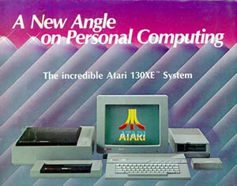

On July 2, 1984 Atari, Inc was sold to Jack Tramiel (former head of Commodore) who renamed the company Atari Corporation. All Atari XL home computer system projects were canceled including the Atari 1400XL and 1450XLD computers. A new line of Atari home computers were promised with updates to the aging 8-bit line of computers. These new computers were designated numbers to represent their memory configuration such as the 130XE had 130,000 bytes of memory and the XE stood for XL line Extended. These new systems, the Atari 65XE and 130XE would include the FREDDIE Memory Management chip originally designed for the Atari XL series computers. Originally no expansion capabilities were going to be included, but after a loud out-cry from Atari Computer User Groups Atari caved in and included a "revised" version of the PBI (Parallel Bus Interface) connection. The new connector was called the ECI for "Extended Cartridge Interface" which was a repackaged version of the PBI to cut costs. At the winter 1985 CES in Las Vegas Atari displayed the new 65XE and 130XE systems as well as several other types of XE systems such as the never released 65 XEP (the "P" standing for Portable) which was a small "luggable" computer with built in 5" Black & Green screen, built in disk drive and detachable keyboard. Also displayed was the 65XEM (the "M" standing for Music, the 65XEM was to have the "AMY" sound chip. Problems plagued the 65XEM project and it never came to market.)
 Essentially the XE were nothing more then Atari 800XL's in new grey clothing and no real improvement over the XL series. The new keyboards had a soft mushy feel and the keys were white and tended to get dirty quickly, and the function keys were on a 45 degree angle making them clumsy to use at times, the US 65XE's lacked an ECI all together, although the 800XE which was Europe's 65XE counterpart did include an ECI port.
Although
sold as a GAME SYSTEM, the Atari XEGS (released in 1987) was a repackaged
Atari 65XE with Missle Command built in. However the one nice feature
of the system was the detachable keyboard. With the exception
of the unreleased Atari 65XE-P Portable (Luggable) computer, the Atari
XEGS was the only Atari 8-Bit computer system to ever have a detachable
keyboard. Its console base unfortunately could not accomodate
a monitor being placed on top it which would have been a nice feature.
It would have been nice if Atari had made one last version of the XE in
the Mega ST case, however this never came to pass.